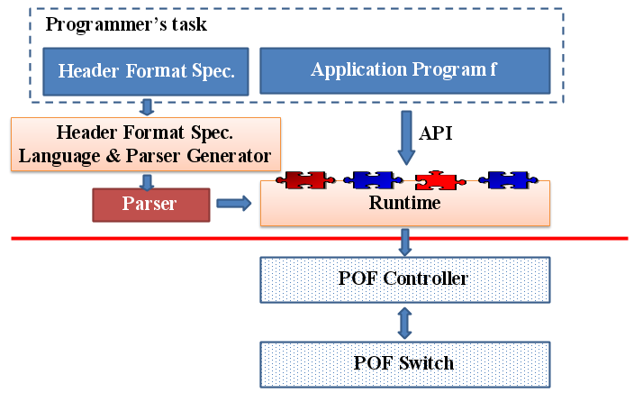

Overview
Software-Defined Networking(SDN) is a new architecture that decouples the network control and forwarding functions. In SDN, distributed switches are managed by a logically-centralized controller. This architecture allows programmers to control the behavior of the network by writing control programs.
Openflow is the first SDN standard. However, it faces two challenges:
- Openflow is protocol dependent, which makes it difficult to support user-customized protocols.
- Programming directly with Openflow is difficult. Many low-level details, such as managing flow tables on distributed switches, makes network policies hard to write and read.
We propose POP to solve these problems.

Following the idea of Maple, programmers implements the application based on a centralized view. Instead of proposing a new programming language, the network policy can be implemented in general-purpose programming languages by calling API's of a runtime system, as long as there are API stubs implemented for the language. The runtime system learns the policy by monitoring the execution of the user program and then generating flow tables automatically, which will be installed on switches.
To make POP independent of predefined
protocols, we use POF (Protocol Oblivious Forwarding) as the
interface between the controller and switches.
In this standard, all protocol-specific contents are replaced by (offset, length) tuples. This enables
us to support any user customized protocols.
At the high level, the user provides specifications of the syntax
of headers, from which a parser of packets can be derived to
translate field names of headers to the (offset, length) tuples.
People
Authors:
- Chunhui He, USTC (Advisor: Xinyu Feng, USTC)
Contributors:
- Dongyang Wang, USTC
- Tiwei Bie, USTC
- Hu Ge, USTC
Contact
Please send inquiries/comments/reports to: hchunhui@mail.ustc.edu.cn